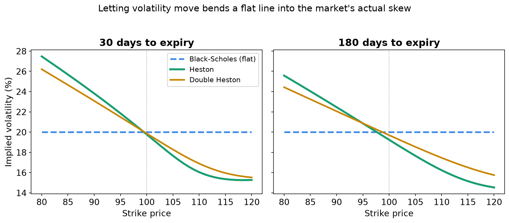
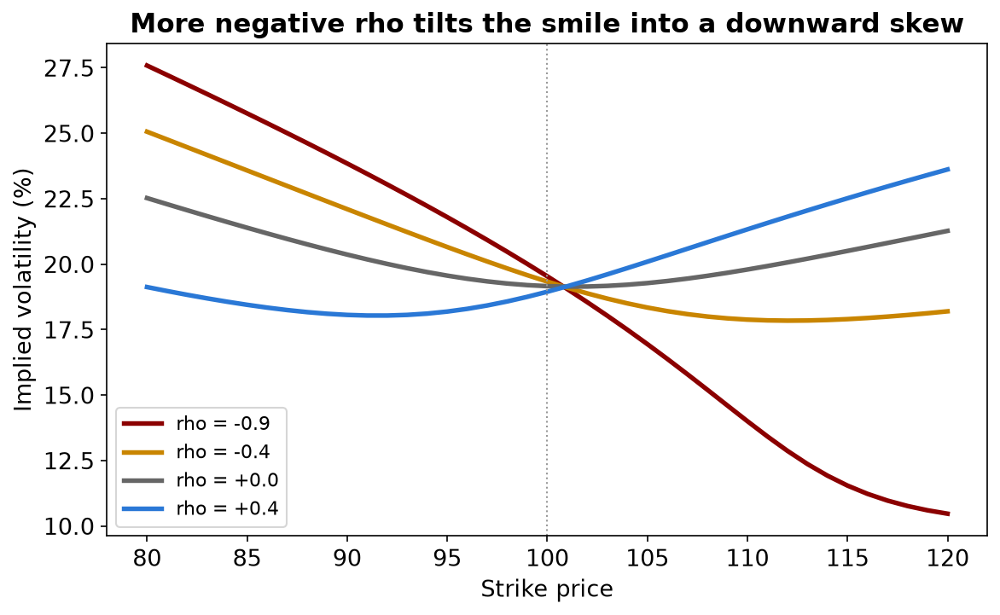
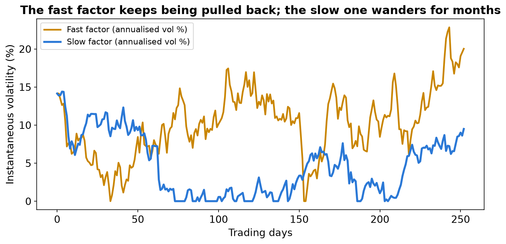
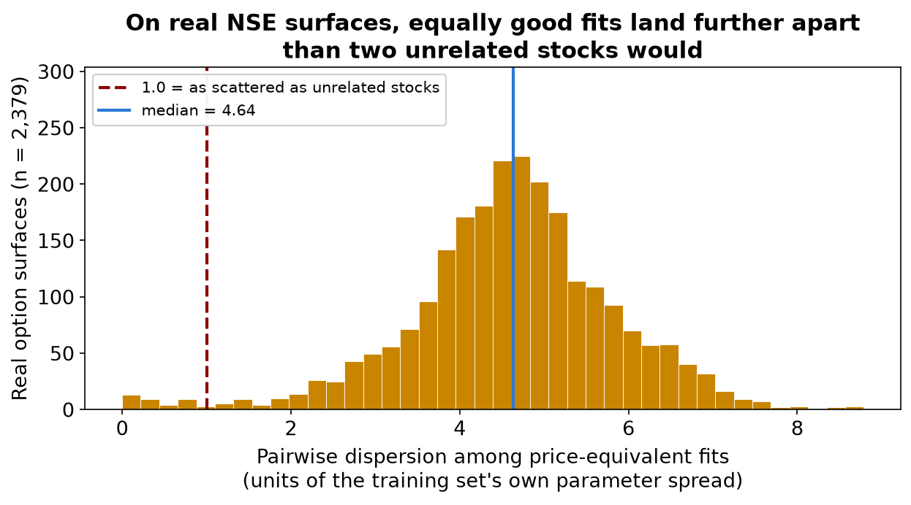

This project builds a chain of four option-pricing models — Black-Scholes, a Monte Carlo simulation of it, Heston, and Double Heston — implements them from scratch, fits them to real Indian stock-market data, and pushes them until they break. Each model relaxes one assumption of the one before. Black-Scholes says volatility never changes. Heston lets it move randomly while being pulled back toward a long-run average. Double Heston gives it two independent sources of randomness, one fast and one slow.
The headline is not "which model prices best." It is sharper: Double Heston fits real option prices very well, but the ten numbers that produce that fit cannot be recovered. Many completely different parameter sets reproduce the same prices almost exactly. The project proves this twice, independently — once on simulated data where the right answer is known, and once on 2,400 real option surfaces from 40 of the most actively traded stocks on India's National Stock Exchange, with no assumed answer at all.
[Project credit: team names, college, and event to be filled in.]
An option is a contract that gives you the right, but not the obligation, to buy or sell a stock at a fixed price — the strike — on a fixed date. You pay for that right up front. A call is the right to buy; a put is the right to sell.
The everyday version: a stock trades at ₹100 and you think it will rise. Instead of buying the stock, you buy a one-month call with a strike of ₹100 for ₹3. If the stock rises to ₹115, the option is worth ₹15, so you made ₹12. If it falls to ₹90, the option expires worthless and you lose only the ₹3, not the ₹10 a shareholder would lose. Limited loss, open-ended gain: that asymmetry is exactly why the price has to be right.
To price an option you need five things: the stock price, the strike, the time left, the interest rate, and how much the stock is likely to move — its volatility. The first four can be looked up. Volatility cannot. It has to be estimated, or read backwards out of prices the market already quotes. That one unknown is what every model here is really arguing about.
Why constant volatility fails. In 1973 Black, Scholes and Merton solved the pricing problem under one assumption: volatility is a single fixed number, the same for every strike and every expiry. Real markets disagree. Take real option prices and work backwards to the volatility each one implies, and you get a different number at every strike. Out-of-the-money puts — the options that pay off in a crash — imply noticeably higher volatility than options near the current price. Plotted against strike, implied volatility is not a flat line but a curve: a "smile," or in stock markets usually a downward "skew." Black-Scholes cannot draw that curve, because it has no way for volatility to differ between scenarios.
Heston's 1993 model makes one change. Variance — volatility squared — becomes a random quantity of its own. It jitters from moment to moment, but it is pulled back toward a long-run level the way a stretched rubber band is pulled back to its resting length: the further it strays, the harder the pull.
The second ingredient is correlation. In real markets, falling prices tend to arrive with rising volatility — crashes are turbulent, calm markets drift upward quietly. Heston captures this by correlating the random shocks to price with the random shocks to variance. A negative correlation makes crash-protecting puts more expensive than a flat-volatility model allows, and that alone bends the flat line into the market's skew.
This rubber-band-with-noise structure is the same mathematics physics uses for any quantity relaxing toward equilibrium while being kicked by random noise — the kind of process Einstein used in 1905 for the jittering of a pollen grain in water. The history actually runs the other way: Louis Bachelier modelled stock prices as a random walk in his 1900 thesis, five years before Einstein's Brownian-motion paper.
A single Heston factor has one reversion speed, one long-run level and one correlation. That is enough to bend the smile at one expiry, but real markets show different smiles at different horizons — a steep skew for options expiring next week and a gentler one for options a year out. Tune one Heston factor to the short end and it often misfits the long end, because it has only one internal clock.
Double Heston adds a second, independent source of volatility randomness. Think of two overlapping weather systems. The fast factor reverts quickly and governs short-term turbulence, which is what shapes a one-week option's smile. The slow factor drifts for months and governs the market's longer mood, which is what a one-year option reflects. Because the two are independent, the short- and long-dated smiles can move somewhat separately, and the overall level of volatility can move separately from the steepness of the skew — things a single factor cannot do.
Black-Scholes.
dS = (r − q) S dt + sigma × S dW
The stock drifts at the risk-free rate r, less any dividend yield q, plus a random shock scaled by one fixed volatility, sigma.
Heston. Variance v is now random:
dS = (r − q) S dt + √v × S dW1
dv = kappa × (theta − v) dt + xi × √v dW2, with correlation rho between dW1 and dW2
Double Heston, as this project implements it, uses two independent copies of the variance equation and adds their contributions:
dS = (r − q) S dt + √v1 × S dW1 + √v2 × S dW2
dv1 = kappa1 × (theta1 − v1) dt + xi1 × √v1 dZ1, correlation rho1 between dW1 and dZ1
dv2 = kappa2 × (theta2 − v2) dt + xi2 × √v2 dZ2, correlation rho2 between dW2 and dZ2
The two variance factors are independent of each other, and each has its own correlation with the stock's returns. That is exactly the structure of Christoffersen, Heston and Jacobs (2009); the project follows it without simplification. The project writes vol-of-vol as xi rather than sigma, to keep it distinct from Black-Scholes' sigma.
| Symbol | Plain meaning | Value used in this project | When it rises |
|---|---|---|---|
| r | Risk-free rate | 5.33%, the Reserve Bank of India's 91-day Treasury bill rate | Calls rise slightly, puts fall |
| q | Dividend yield | 0 throughout | Calls fall slightly, puts rise |
| v0 | Today's variance | The stock's own 30-day volatility, squared; split in half across the two Double Heston factors | Near-dated options get pricier |
| kappa | Speed of pull-back to theta | Heston 2.0; Double Heston 5.0 (fast) and 0.5 (slow) | Variance becomes more predictable; long-dated smiles flatten |
| theta | Long-run variance | The stock's own long-run return variance; split in half across the two factors | Prices rise, especially at long maturities |
| xi | Vol-of-vol: how violently variance moves | Heston 0.5; Double Heston 0.5 (fast) and 0.3 (slow) | Smile curvature and tails grow |
| rho | Correlation of price and variance shocks | −0.7 in every factor | More negative means a steeper downward skew |
These are the Pricing page's starting values. Pressing "Calibrate Heston" replaces the five Heston values with ones fitted to the live market; the Double Heston values stay as starting points (Section 7 explains why).
The Feller condition. Variance sits under a square root, so it must not go below zero. The condition 2 × kappa × theta > xi² guarantees it never touches zero. Real markets often violate it, so this project's simulator is built to handle that case rather than assume it away.
Intuition first. The project prices every option two independent ways and checks them against each other.
The first is simulation. Play out thousands of possible futures for the stock — and for its variance — see what the option pays at expiry in each, average, and discount back to today. This is Monte Carlo: slow, but easy to trust, because it does literally what the model says.
The second is a shortcut. Heston-type models have a known "characteristic function": a mathematical fingerprint of where the stock could end up. A formula turns that fingerprint directly into an option price through one numerical integral, with no simulation at all. It is noise-free and far faster, which matters because fitting a model to market data needs thousands of prices per fit.
The technical note. Simulation uses the "full truncation" scheme of Lord, Koekkoek and van Dijk (2010): variance may dip below zero on paper, but wherever it is used it is floored at zero first, which stops the simulation breaking when the Feller condition fails. Every random draw is paired with its mirror image (antithetic variates) to reduce noise. The formula route uses the "little trap" form of Heston's characteristic function (Albrecher and co-authors, 2007), which avoids a known flaw in the 1993 formula where a complex logarithm can silently jump branches and give a wrong price for long-dated options. For Double Heston, the two factors are independent, so their fingerprints simply multiply. The project's tests check that the formula and the simulation agree, for both Heston and Double Heston.
Calibration means finding the parameter values whose model prices best match the prices the market is actually quoting.
Heston is calibrated live. The site pulls a real option chain and fits the five Heston parameters by least squares. Two design choices matter. First, it uses expiries spread from about three weeks to a year, because the reversion speed kappa only shows up in how the smile changes across time; fitted to a few adjacent expiries, it runs to the edge of its range. Second, each quote is weighted by its sensitivity to volatility (its "vega"), which turns a price error into something close to a volatility error. Without that weighting, the fit chases whichever options are most expensive and ignores the cheap far-out-of-the-money options that carry the skew. The site then reports the fit in volatility points, next to the best single flat volatility for the same quotes.
Double Heston is deliberately never calibrated live, and that is the project's finding, not an omission. Ten parameters fitted to one day's options do not come back with a unique answer. The project shows this two independent ways.
On simulated data, where the true parameters are known: a least-squares optimizer given every advantage — the exact prices, many random starting points — matches the prices to a root-mean-square error of about 9 × 10⁻⁸, effectively perfect. Yet the parameters it recovers score a median "skill" of 1.80, where 1.0 means no better than guessing the average and anything above means worse. Restricting to the fits that match prices most tightly does not help: skill there is 1.85. The optimizer found a parameter set that reprices the surface almost perfectly while being wrong about the parameters, because more than one such set exists.
On real market data, with no simulation and no assumed truth: take one stock's real option prices on one day and fit them from sixteen different random starting points. If the prices pinned down the parameters, all sixteen fits would land together. Across 40 of the most liquid stocks on the National Stock Exchange and 60 usable trading days for each — 2,400 real surfaces — 99% produce more than one clearly different set of parameters that each price the day's real quotes about equally well. The typical spread between these equally good answers is 4.6, in units of how widely parameters vary across the whole training population: two fits of the same surface land further apart than two unrelated stocks would. This is not a weak optimizer. The best fit it found beats a single flat volatility on every one of the 2,400 surfaces, so the fits are genuinely good, and still not unique. If anything the spread is understated: on 92% of surfaces at least one parameter ran to the edge of its physically plausible range, meaning the prices expressed no preference in that direction and only the range itself stopped it.
The site has seven pages. Home fits Heston live to the NIFTY index option chain and shows how many times more closely it tracks the market's smile than the best flat volatility, then states the site's arc: four models, each fixing the last one's flaw, and then a catch. If the live data feed fails — venue wifi, a rate limit, a market holiday — it falls back to a previously captured snapshot of a real chain and labels it as such rather than pretending it is live.
Options 101 covers calls, puts, strikes, premiums and implied volatility around an interactive profit-and-loss diagram. Pricing models is the working calculator: choose a ticker, strike, expiry and model — Black-Scholes, GBM Monte Carlo, Heston or Double Heston — and see its price, its Monte Carlo standard error, an independent formula price, the Greeks, and its implied-volatility curve drawn against the market's own quotes. The GBM Monte Carlo option is there as an engine check: it must converge to the Black-Scholes formula as paths are added. A "Calibrate Heston" button fits Heston live; Double Heston's ten parameters are sliders, with the interface explaining why there is no calibrate button. Volatility forecast asks a separate question — whether EWMA or GARCH forecasts of next month's volatility beat simply assuming next month looks like last month — scored on data the models never saw, and repeated across 60 stocks and ten years of history. Assumptions lists every assumption Black-Scholes makes and which of them this project's models fix. Double Heston presents the research result. Whole market lets a visitor pick any of 210 stocks and see the project's core finding for that stock: a steady, good price fit on every date, beside ten parameters that jump around anyway.
Underneath is Python: Streamlit for the interface, NumPy and SciPy for the mathematics, pandas for data, Plotly and Altair for charts, and PyTorch for the neural-network side of the research. Live option chains for NSE indices come from the Upstox market-data service; price history comes from Yahoo Finance.
Every figure below comes from the project's own pricing code, with a stock price of 100 and the project's risk-free rate of 5.33%.

Figure 1. Black-Scholes draws a flat line by construction. Heston and Double Heston both bend it into a downward skew, because negative correlation is doing the work in both.

Figure 2. Holding everything else fixed and sweeping rho from +0.4 to −0.9 tilts the smile from a mild upward slope into a steep downward skew. Rho is the parameter behind the market's leverage effect.

Figure 3. One simulated year of the two Double Heston factors at the site's starting values. The fast factor is pulled back toward its average within weeks (a half-life of about five), so it keeps crossing it; the slow factor's pull is ten times weaker, so it wanders away for months at a time. Both touch zero, because these values violate the Feller condition — exactly the case the simulator's full-truncation scheme exists to handle.

Figure 4. Not an illustration but the project's real result: how far apart equally good fits land on the 2,379 real surfaces that have more than one, with the "as scattered as unrelated stocks" line marked. Almost every surface sits well to its right.
Worked examples, computed directly by the project's pricing code (Heston with v0 = theta = 0.04, kappa 2.0, xi 0.5, rho −0.7; Double Heston splitting that variance across a fast factor with kappa 5.0 and a slow one with kappa 0.5):
What the models leave out. None includes jumps — sudden moves like a crash or an earnings surprise — so the very largest one-day moves are still underestimated. Dividends are supported but set to zero. Trading costs and the bid-ask spread are ignored; every price is frictionless. One interest rate is used for every maturity.
What limits the real-market tests. The free NSE end-of-day data has closing prices but no bid-ask quotes, so part of any reported error is the gap between a closing print and a price you could actually trade at. Real option chains are also incomplete: on a given day only 11 to 19 of the 20 target strike-and-expiry slots have a usable price. The neural network is told which slots are missing rather than being fed invented prices for them.
The central limitation, stated honestly. This project does not say Double Heston is a bad pricing model. It fits real markets well, clearly better than a flat volatility. What it shows is narrower and more useful: a good price fit and recoverable parameters are different achievements, and the second does not follow from the first. Anyone who calibrates Double Heston to one day's quotes and reports the parameters as the market's "true" volatility structure is claiming something the data cannot support — and the quality of the fit gives no warning.
Next steps. Adding jumps to either variance factor would address the fat tails, and the characteristic-function pricing extends to jumps cleanly. A more ambitious question is whether fitting many stocks or many days jointly narrows the ambiguity that single-surface fitting shows so clearly; this project's market-wide results hint at it but were not designed to test it.
Black-Scholes' single fixed volatility cannot produce the smile that real option markets show. Heston fixes this by letting variance move randomly around a long-run level, and a negative correlation between price and variance is what creates the realistic downward skew. Double Heston adds a second, independent variance factor — one fast, one slow — so short- and long-dated smiles can behave differently. Both models, priced two independent ways and checked against each other, fit real Indian option prices well. Yet on simulated data with a known answer and on 2,400 real market surfaces with none, many different Double Heston parameter sets reproduce the same prices almost exactly, so a good fit is not evidence that its parameters are right.
Does this predict whether a stock will go up or down?
No. The models price options and forecast how much a stock might move, never which way.
If Double Heston's parameters can't be recovered, why include it?
Because the finding only matters for a model that works. Double Heston prices real quotes well; it is the parameters behind that fit, not the fit, that cannot be pinned down.
Is the optimizer just not trying hard enough?
No. Given exact prices and many starting points, it matches prices essentially perfectly and still lands on wrong parameters. It is finding a different, equally valid answer, because more than one exists.
Does this mean Double Heston is a bad model?
No. Fitting prices and recovering parameters are different tasks. It does the first well and cannot do the second from one day's options.
Why keep Black-Scholes if it is wrong?
It is the baseline every other model must beat, and implied volatility — the language all the charts use — is defined through it.
Why use live data, given that the venue's internet might fail?
Live prices are more convincing to a live audience. If the feed fails, the site falls back to a real captured snapshot and says so on screen.
What should someone who trades options take from this?
Trust the prices a well-fitted Double Heston model produces, but not a story built on its ten fitted parameters.
Could more data fix the ambiguity?
Possibly, in part — fitting many days or many stocks together might narrow it. The project flags this as an open question rather than assuming an answer.
What data do the real-market results use?
Official NSE end-of-day data: 210 stocks over 60 trading days for the market-wide results, and 40 of the most liquid stocks over 60 days each, with sixteen fits per day, for the ambiguity study.